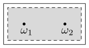
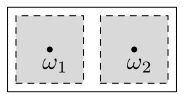

| $\mathsf{FF}$ | $\mathsf{FO}$ | $\mathsf{OF}$ | $\mathsf{OO}$ | |||||
| $\mathsf{F}$ | $2$ | $\frac{1}{2}$ | $1$ | $\frac{2}{3}$ | $1$ | $0$ | $1$ | $1$ |
| $\mathsf{O}$ | $0$ | $\frac{1}{2}$ | $\frac{1}{2}$ | $0$ | $\frac{1}{2}$ | $\frac{3}{2}$ | $1$ | $1$ |
8 Bayesian Games
So far, we have restricted attention to simultaneous move games where players have perfect knowledge of the utility functions of other players. This is not always true in practice. In this section, we will consider games where players have uncertainty about the utility functions of other players, and this uncertainty may be different for different players. Such games are called games with incomplete information. We will focus on the special case when players have a subject probability distribution on the uncertainty. Such games are called Bayesian Games.
8.1 An illustrative example
To iilustrate such games, let’s consider a variation of battle of sexes, where player 2 may either want to meet player 1 or may want to avoid it. For simplicity we assume that player 1 is the same as before. We will model it by saying that there are two types of player 2; the type of the player is determined by events in nature, and that each player has a probability distribution on the events in nature (for simplicity, we will assume that this probability distribution is common knowledge between the players, but it is possible to model Bayesian games where each player has a different subjective probability on the events in nature).
More formally, we assume that there are two states in nature, modelled by \[ Ω = \{ ω_1, ω_2 \}. \] In state \(ω_1\), player 2 wants to meet player 1 while in state \(ω_2\), player 2 wants to avoid player 1. Furthermore, there is a prior belief \(p\) on \(Ω\) which we will assume is given by \[ p(ω_1) = \tfrac 12 \quad\text{and}\quad p(ω_2) = \tfrac 12. \]
Each player has a type, which we will denote by \(t_i\) for player \(i\) (there is a slight notational conflict as we had sometimes used \(t_i\) to denote alternative strategies for players). The set of types of player \(i\) is denoted by \(\ALPHABET T_i\). In the above example, \[ \ALPHABET T_1 = \{1\} \quad\text{and}\quad \ALPHABET T_2 = \{1, 2\}. \]
The important aspect of modeling such games is the information structure, i.e., who knows what about the states of nature. The information structure is modelled by a signal \(τ_i\) from the state of nature to player’s type. For this example, we will assume that \[ τ_1(ω_1) = τ_1(ω_2) = 1 \quad\text{and}\quad τ_2(ω_1) = 1, τ_2(ω_2) = 2. \] Thus, player 2 knows the state of nature (i.e., it knows whether it wants to meet with player 1 or not), while player 1 does not know the tate of nature (i.e., she doesn’t know if player 2 wants to meet with her or not).
Thus, effectively the type \(t_i = τ_i(ω)\) of the player is a random variable and the information structure can be thought of as the collection of partition generated by the types of each player, i.e., \(σ(t_1)\) and \(α(t_2)\) (where \(σ(⋅)\) means the sigma algebra generated by a random variable). Thus, for the above example, we can visualize the information structure as shown in Figure 8.1


We will use a slightly different terminology and call the moves of the players as actions (and denote them by \(a_i \in \ALPHABET A_i\). The pure strategy of a player is defined as a map from its type to its actions, i.e., \[ s_i \colon \ALPHABET T_i \to \ALPHABET A_i. \] This means that in the above example player 2 of type 1 (the one who wants to meet with player 1) may choose actions differently from player 2 of type 2 (the one who wants to avoid player 1).
Note that player 1 has two pure strategies: \[ 1 \mapsto \mathsf{F}, \quad \text{and} \quad 1 \mapsto \mathsf{O} \] while player 2 has four pure strategies: \[ 1 \mapsto \mathsf{F}, 2 \mapsto \mathsf{F}, \quad 1 \mapsto \mathsf{F}, 2 \mapsto \mathsf{O}, \quad 1 \mapsto \mathsf{O}, 2 \mapsto \mathsf{F}, \quad 1 \mapsto \mathsf{O}, 2 \mapsto \mathsf{O}. \] For simplicity of notation, we will simply denote them as follows: \[ \ALPHABET S_1 = \{ \mathsf{F}, \mathsf{O} \} \quad\text{and}\quad \ALPHABET S_2 = \{ \mathsf{FF}, \mathsf{FO}, \mathsf{OF}, \mathsf{OO} \}. \]
As was the case in games with complete information, a mixed strategy \(σ_i\) is a probability distribution over a set of pure strategies.
There are two ways to model the utility function of the players. Utilities could be either modelled as a function of events in nature and strategy profile of players or as a function of type profile of players and strategy profile of players. For this example, we will take the former approach. Thus, \[ u_i \colon Ω × \ALPHABET S \to \reals, \quad i \in \ALPHABET N. \]
For two player finite games, a compact way to write the utility function is to draw the bimatrix representation for each \(ω \in Ω\). For instance, in the above example, we may consider
| $\mathsf{F}$ | $\mathsf{O}$ | |||
| $\mathsf{F}$ | $2$ | $1$ | $0$ | $0$ |
| $\mathsf{O}$ | $0$ | $0$ | $1$ | $2$ |
| $\mathsf{F}$ | $\mathsf{O}$ | |||
| $\mathsf{F}$ | $2$ | $0$ | $0$ | $2$ |
| $\mathsf{O}$ | $0$ | $1$ | $1$ | $0$ |
Given a pure strategy profile \((s_1, s_2)\), the utility of player \(i\) is \[ U_i(s_1, s_2) = \sum_{ω \in Ω} \sum_{t_1 \in \ALPHABET T_1} \sum_{t_2 \in \ALPHABET T_2} p(ω) u_i(ω, s_1( t_1(ω) ) s_2( t_2(ω) ) ). \] The payoff of a mixed strategy profile \((σ_1, σ_2)\) is defined as \[ U_i(σ_1, σ_2) = \sum_{s_1 \in \ALPHABET S_1} \sum_{s_2 \in \ALPHABET S_2} σ_1(s_1) σ_2(s_2) U_i(s_1, s_2). \]
The equilibrium of a Bayesian game is called Bayesian equilibrium (abbreviated as BNE). There are two equivalent methods to define and compute BNE of Bayesian game. We describe both of them below.
Method 1: Ex-ante view
According to the ex-ante view, we view the game before nature has played. A strategy profile \((s_1, s_2)\) is a (pure strategy) BNE if \[ U_i(s_i, s_{-i}) \ge U_i(s'_{i}, s_{-i}), \quad \forall i \in \ALPHABET N, s'_i \in \ALPHABET S_i. \] Note that the definition BNE is similar to that of NE; the difference is in how the utility function \(U_i\) is defined. A mixed strategy BNE is defined in a similar manner.
Thus, if we compute the utility function \(U_i(s_1, s_2)\) for all pure strategy profiles, we can easily find the BNE. For instance, for the above game, the utility function \(U_i(s_1, s_2)\) can be computed as follows: \[\begin{align*} U(\mathsf{F}, \mathsf{FF}) &= p(ω_1) u(ω_1, \mathsf{F}, \mathsf{F}) + p(ω_2) u(ω_2, \mathsf{F}, \mathsf{F}) = \tfrac 12 (2,1) + \tfrac 12 (2,0) = (2, \tfrac 12) \\ U(\mathsf{F}, \mathsf{FO}) &= p(ω_1) u(ω_1, \mathsf{F}, \mathsf{F}) + p(ω_2) u(ω_2, \mathsf{F}, \mathsf{O}) = \tfrac 12 (2,1) + \tfrac 12 (0,2) = (1, \tfrac 32) \\ \cdots &= \cdots \end{align*}\]
We can write such an normal-form reduction of the game as a bimatrix game:
We can then identify a BNE of the orginal game by identifying the NE of its normal-form rediction. Although this approach is simple, it is not very attractive because the normal-form reduction has large strategy spaces (exponential in the number of types) and we have already seen that it difficult to compute NE of games with large strategy spaces.
8.2 Method 2: Interim view
According to the interim view, we view the game after nature has played; so each player knows its type. We can consider each player of each time (i.e., each \((i,t_i)\) as a separete player. Thus, the game has \(\prod_{i \in \ALPHABET N} |\ALPHABET T_i|\) players.
Combing back to our example, we can write the utility function of all the players as follows:
| $\mathsf{FF}$ | $\mathsf{FO}$ | $\mathsf{OF}$ | $\mathsf{OO}$ | |
| $\mathsf{F}$ | $2$ | $1$ | $1$ | $0$ |
| $\mathsf{O}$ | $0$ | $\frac{1}{2}$ | $\frac{1}{2}$ | $1$ |
| $\mathsf{F}$ | $\mathsf{O}$ | |
| $\mathsf{F}$ | $1$ | $0$ |
| $\mathsf{O}$ | $0$ | $2$ |
| $\mathsf{F}$ | $\mathsf{O}$ | |
| $\mathsf{F}$ | $0$ | $2$ |
| $\mathsf{O}$ | $1$ | $0$ |
Note that player 2.1 does not care what player 2.2 does. But player 1.1’s strategy depends on both player 2.1 and player 2.2, which indirectly couples the two players.
We now show how to find the BNE via the interim strategy.
First we check for all pure strategy BNE by trying to find a fixed point of BR maps.
- If P1.1 plays \(\mathsf{F}\), BR of P2.1 is \(\mathsf{F}\) and BR of P2.2 is $.
- If P2 is playing \(\mathsf{FO}\), BR of P1.1 is \(\mathsf{F}\). Thus, \((\mathsf{F}, \mathsf{FO})\) is BNE.
- If P1.1 plays \(\mathsf{O}\), BR of P2.1 is \(\mathsf{O}\) and BR of P2.2 is $.
- If P2 is playing \(\mathsf{FO}\), BR of P1.1 is \(\mathsf{F}\). Thus, \((\mathsf{O}, \mathsf{OF})\) is not BNE.
Now we consider mixed strategy BNE. We have two possibilities:
Case 1 P1 is playing a pure strategy. Then P2.1 and P2.2 will also play pure strategies because their BR are unique. We have already compute the NE in pure strategies.
Case 2 P2 is playing a mixed strategy \(σ_1 = (p, 1-p)\). Consider mixed strategies \[ σ_{2.1} = (q_1, 1-q_1) \quad\text{and}\quad σ_{2.2} = (q_2, 1-q_2) \] of player 2. Note that we have assumed that \(p \in (0,1)\) but \(q_1, q_2 \in [0, 1]\).
- if \(q_1 \in (0,1)\), then by the invariance principle, \[ U_{2.1}(σ_1, \mathsf{F}) = U_{2.1}(σ_1, \mathsf{O}) \implies p = 2 (1-p) \implies p = \frac 23. \]
- if \(q_2 \in (0,1)\), then by the invariance principle, \[ U_{2.2}(σ_1, \mathsf{F}) = U_{2.1}(σ_1, \mathsf{O}) \implies (1-p) = 2p \implies p = \frac 13. \]
But \(p\) must take a single value so only one of them can be true. Thus, either
- \(q_1 \in (0, 1)\) and \(q_2 \in \{0, 1\}\), or
- \(q_2 \in (0, 1)\) and \(q_1 \in \{0, 1\}\).
We consider both these cases separately.
Case 2.1 \(p \in (0,1)\), \(q_1 \in (0,1)\), and \(q_2 \in \{0, 1\}\).
As argued before, in this case \(p = \tfrac 23\). We consider the two values of \(q_2\) separately.
\(q_2 = 0\). In this case, the mixed strategy of P2 is \[ σ_2 = (0, q_1, 0, 1-q_1). \] By the invariance principle, for P1 to play a mixed strategy, it must be that \[ U_1(\mathsf{F}, σ_2) = U_19\mathsf{O}, σ_2) \implies q_1 = \tfrac 12 q_1 + (1 - q_1) \implies q_1 = \tfrac 23. \] We also need to check that P2.2 is playing her BR, i.e., \[ U_{2.2}(σ_1, \mathsf{F}) \le U_{2.2}(σ_1, \mathsf{O}) \iff \tfrac 13 \le \tfrac 43 \] which is true. Hence, the following is a mixed strategy NE. \[ \bbox[5pt,border: 1px solid]{ σ_1 = (\tfrac 23, \tfrac 13), \quad σ_{2.1} = (\tfrac 23, \tfrac 13), \quad σ_{2.2} = (0, 1). } \]
\(q_2 = 1\). In this case, the mixed strategy of P2 is \[ σ_2 = (q_1, 0, 1-q_1, 0). \] By the invariance principle, for P1 to play a mixed strategy, it must be that \[ U_1(\mathsf{F}, σ_2) = U_1(\mathsf{O}, σ_2) \implies 2 q_1 + (1 - q_1) = \tfrac 12 (1 -q_1) \implies q_1 = -\tfrac 13. \] Thus, there is no feasible solution in this case.
Case 2.2 \(p \in (0,1)\), \(q_2 \in (0,1)\), and \(q_1 \in \{0, 1\}\).
As argued before, in this case \(p = \tfrac 13\). Just to show the possibility, we solve this case differently from Case 2.1
Since we know the strategy of P1, we compute the BR of P2.1. We know that \[ U_{2.1}(σ_1, \mathsf{F}) = \tfrac 13 \quad\text{and}\quad U_{2.1}(σ_1, \mathsf{O}) = \tfrac 43 \] Since \(U_{2.1}(σ_1, \mathsf{F}) < U_{2.1}(σ_1, \mathsf{O})\), player 2.1 plays \(\mathsf{O}\). Thus, from the point of view of P1, P2 is playing the mixed strategy \[ σ_2 = (0, 0, q_2, 1-q_2). \] Unlike Case 2.1, we don’t need to consider the other possibility because we have established that P2.1 plays \(\mathsf{O}\)
By the invariance principle, for P1 to play a mixed strategy, it must be that \[ U_1(\mathsf{F}, σ_2) = U_1(\mathsf{O}, σ_2) \implies q_2 = \tfrac 12 q_2 + (1-q_2) \implies q_2 = \tfrac 23. \] Hence, the following is a mixed strategy NE. \[ \bbox[5pt,border: 1px solid]{ σ_1 = (\tfrac 13, \tfrac 23), \quad σ_{2.1} = (1, 0). \quad σ_{2.2} = (\tfrac 23, \tfrac 13), } \]
Exercise 8.1 Using the normal form reduction of Figure 8.3, verify that the following are mixed strategy NE:
- \(σ_1 = (\tfrac 23, \tfrac 13)\) and \(σ_2 = (0, \tfrac 23, 0, \tfrac 13)\).
- \(σ_1 = (\tfrac 13, \tfrac 23)\) and \(σ_2 = (0, 0, \tfrac 23, \tfrac 13)\).